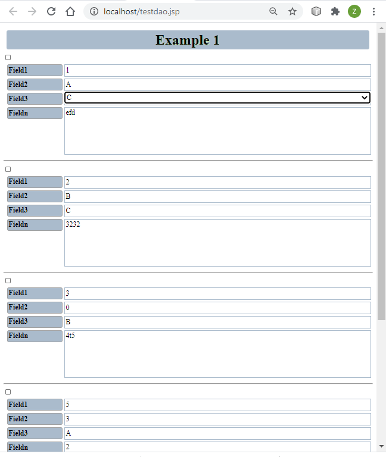
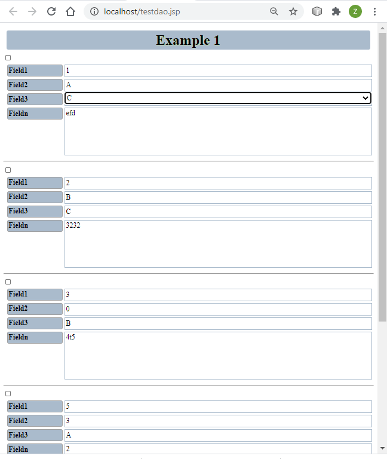
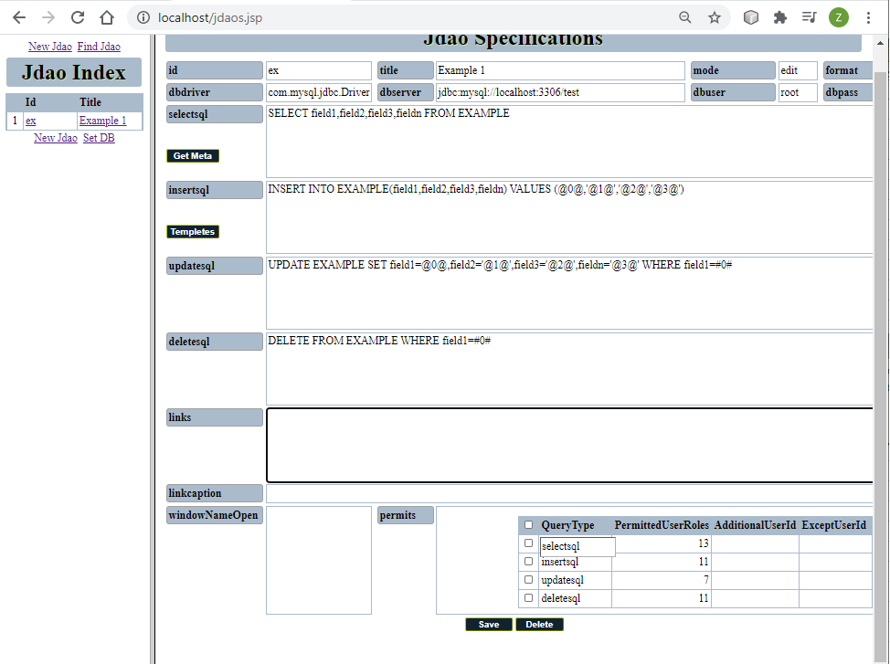
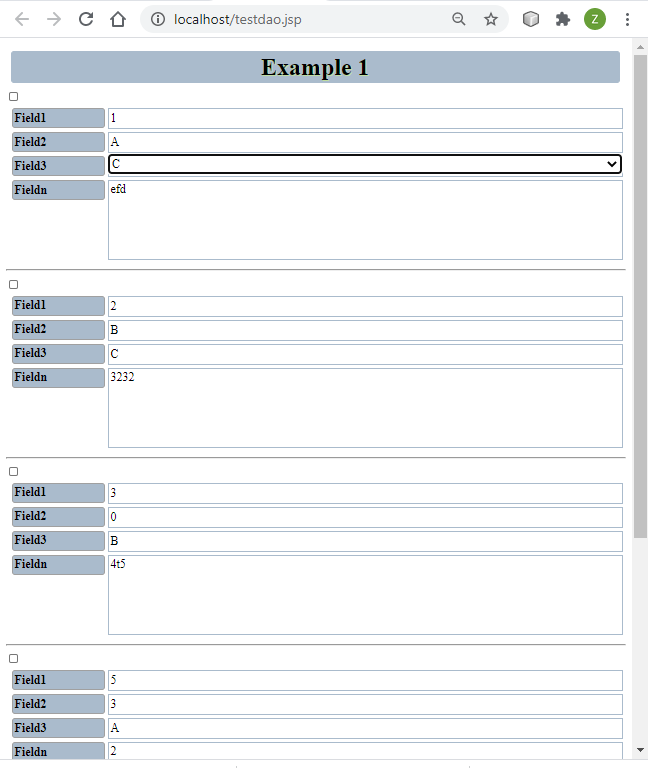

|
Java Database Access Object
| |
| Description: | Web application for designing relational databases and rapidly generating form/grid web pages from data. It needs to be installed on a Java web application container such as Apache Tomcat |
| Installation File: | Desktop Java version for Windows/Mac/Linux |
| How to Use: | Download and unzip the archive to install the war file in Tomcat or any Java web application container |
|


|
|